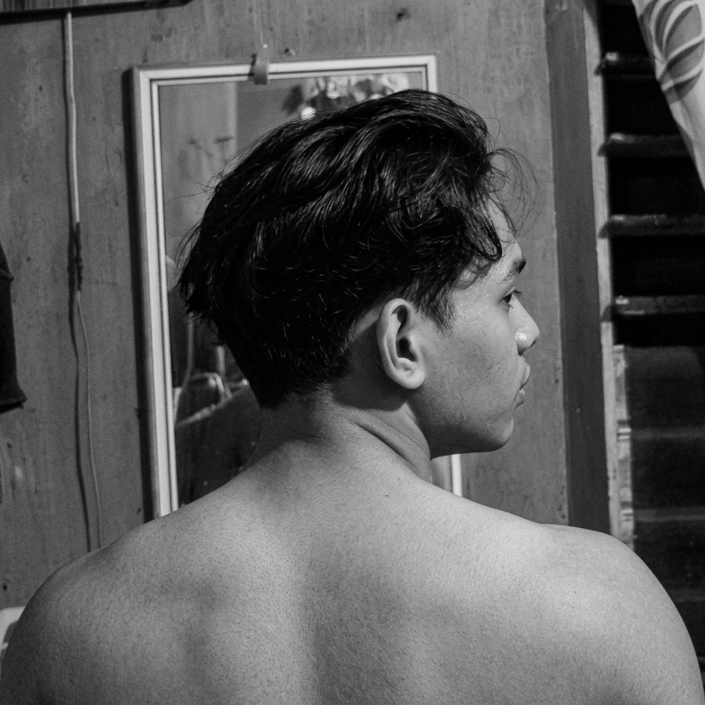

Welcome to my portfolio
Hi, I'm Francis I. Salcedo.
|
I'm an IT student at Negros Oriental State University who enjoys building practical web and desktop systems — from records management to internship tracking tools. Outside of coding, you'll usually find me gaming, playing guitar, or singing.
